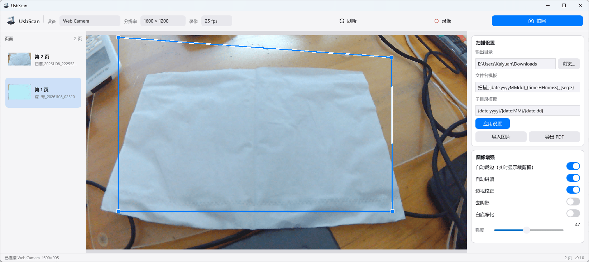

任意 UVC 摄像头
Media Foundation 主后端，DirectShow 兜底。网络摄像头、高拍仪、工业模组与笔记本内置摄像头都能用。
拍摄、自动裁边、透视校正、离线 OCR 与 PDF 归档，一条完整的工作流。无需专业扫描仪，也无需把文档上传到云端。

功能
从取景到归档，每一步都围绕真实文档扫描设计，而不是简单的拍照工具。
Media Foundation 主后端，DirectShow 兜底。网络摄像头、高拍仪、工业模组与笔记本内置摄像头都能用。
预览上实时绘制文档四角，拍摄时自动裁掉桌面背景并纠正透视畸变；检测不可信时安全跳过。
调用本机 Tesseract 5，不联网、不上传。识别结果可直接用于可搜索 PDF。
多页 PDF、单页 JPG 或整份会话导出，文件名与子目录模板可在拍摄前配置。
Slint 自绘的圆角界面，跟随系统亮/暗主题；开关、工具栏与卡片统一为 macOS 视觉语言。
在关于窗口选择是否检查更新。启用后启动时访问 GitHub Releases，发现新版本可在右下角一键下载安装。
工作流
不用学习复杂的图像软件，拍摄时自动完成大部分校正。
插上任一 USB 摄像头，选择设备与分辨率。
预览实时显示裁剪框，按下快门自动裁边、纠偏并落盘。
重命名、删除、OCR，导出 PDF 或 JPG。
文档
设计、架构、命名规则与发布流程都在仓库中公开。